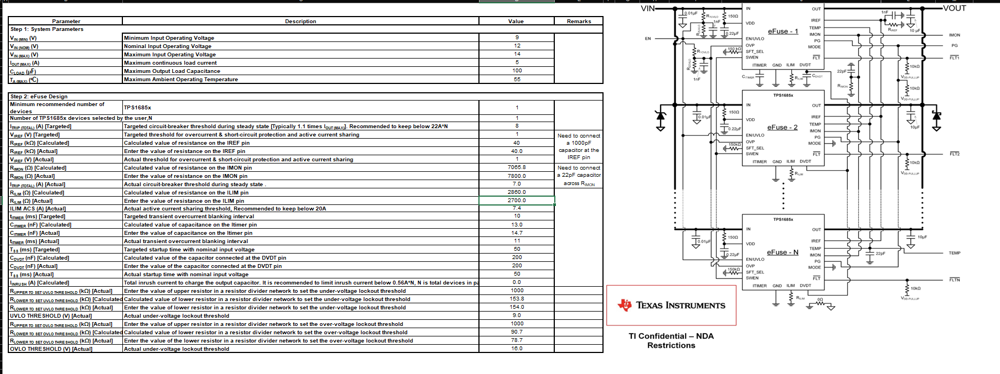
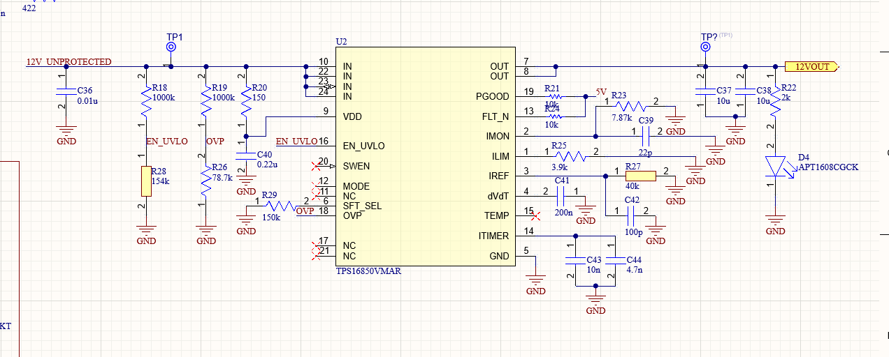
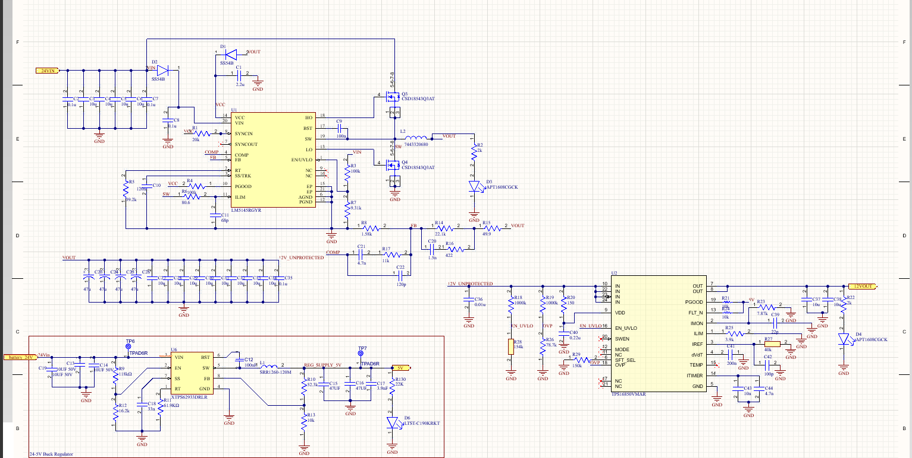
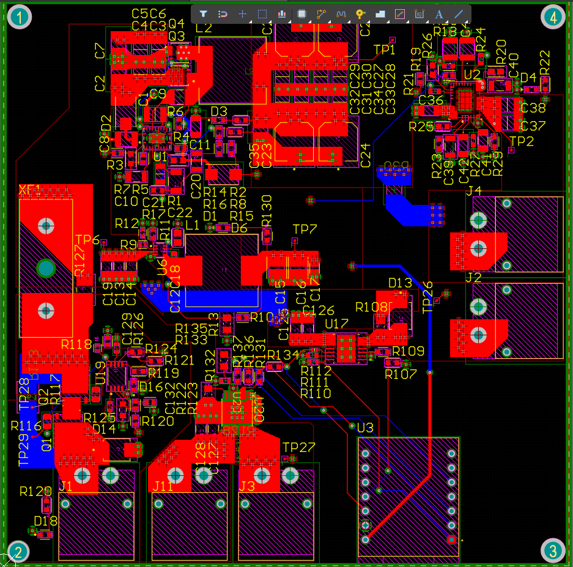
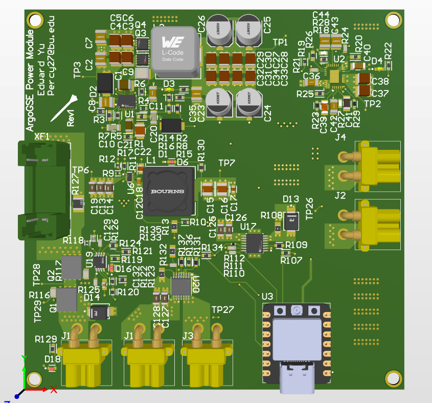
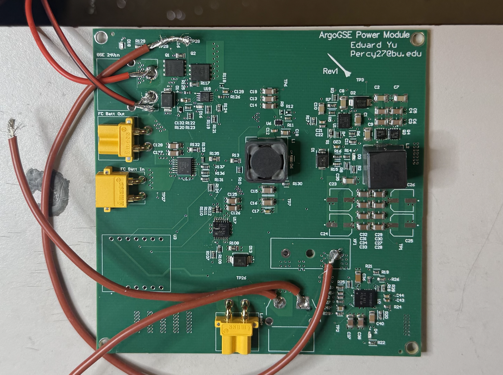

POWER ELECTRONICS / TEAM PROJECT / IN PROGRESS
24V–12V DC-DC Converter
eFuse Protection Circuit Design
eFuse Circuit Design
Altium Designer, Datasheet Analysis
In Development
01 / OVERVIEW
Project Overview
This collaborative project focuses on developing a 24V-to-12V DC-DC power conversion system with integrated electronic protection. My primary responsibility was designing the eFuse protection stage for the 12V output. The eFuse provides controlled startup and protection against overcurrent conditions.
02 / DESIGN REQUIREMENTS
Defining the Requirements
Before beginning the circuit design, I identified the electrical requirements for the eFuse protection stage.
12V
Nominal Output Voltage
5A
Continuous Current Target
7A
Maximum Current Requirement
10ms
Soft-Start Target
03 / DATASHEET ANALYSIS
From Datasheet to Component Values
I studied the eFuse datasheet to understand its operating characteristics and configuration options. Using the manufacturer's equations and recommended operating conditions, I calculated component values for current limiting, startup timing, and fault protection. These calculations informed the design of the protection circuit.

04 / CIRCUIT DESIGN
Designing the eFuse Schematic
After determining the component values, I used Altium Designer to create the eFuse schematic. The circuit incorporates the components required to configure startup behaviour, current limiting, and fault response.

05 / SYSTEM INTEGRATION
Integrating the Complete System
My eFuse protection circuit was integrated with the DC-DC conversion stage developed by my teammate. This process helped me understand how individual circuit blocks must work together to form a complete electrical system.

06 / PCB DESIGN
PCB Layout & Design Considerations
The PCB layout stage introduced important considerations beyond the schematic. I learned about prioritising component placement, organising functional circuit blocks, and the importance of routing and trace layout. Reviewing the complete board helped me better understand the relationship between circuit design and physical implementation.

07 / 3D VISUALISATION
3D PCB Design Render
This 3D render illustrates the physical layout of the power conversion system, including component placement and the overall board configuration. It provides a visual representation of the PCB design before fabrication and assembly.

PCB Fabrication & Assembly
Following the PCB design and fabrication process, the physical board was assembled and prepared for testing. I assisted with soldering electronic components and integrated circuit chips onto the fabricated PCB, as well as testing the assembled board to evaluate its functionality.

Fabricated power converter PCB following component assembly.
08 / TEAM CONTRIBUTIONS
My Contribution
My primary contribution was the eFuse protection circuit, including datasheet analysis, component calculations, and schematic design. The DC-DC conversion stage and other portions of the complete system were developed collaboratively with my teammate.